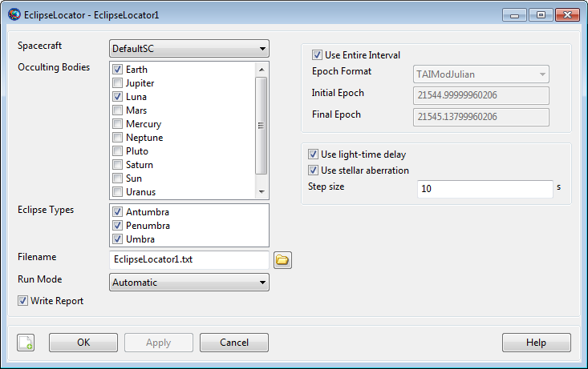

EclipseLocator — A Spacecraft eclipse event locator
EclipseLocator is a SPICE-based subsystem that uses a parallel configuration for the solar system and celestial bodies from other GMAT components. For precision applications, care must be taken to ensure that both configurations are consistent. See Remarks for details.
An EclipseLocator is an event locator used to find solar eclipse events as seen by a Spacecraft. By default, an EclipseLocator generates a text event report listing the beginning and ending times of each event, along with the duration, eclipsing body, shadow type, and information about simultaneous and adjacent nested events. Eclipse location can be performed over the entire propagation interval or over a subinterval, and can optionally adjust for light-time delay and stellar aberration.
Eclipse location can be performed with one or more CelestialBody resources as eclipsing (or occulting) bodies. Any configured CelestialBody can be used as an occulting body, including user-defined ones. Any type of eclipse can be found, including total (umbra), partial (penumbra), and annular (antumbra). All selected occulting bodies are searched using the same selection for eclipse types, search interval, and search options; to customize the options per body, use multiple EclipseLocator resources.
By default, the EclipseLocator searches the
entire interval of propagation of the Spacecraft. To
search a custom interval, set UseEntireInterval to
False and set InitialEpoch and
FinalEpoch accordingly. Note that these epochs are
assumed to be Spacecraft epochs, and so must be valid
and within the Spacecraft ephemeris interval. If they
fall outside the propagation interval of the
Spacecraft, GMAT will display an error.
The contact locator can optionally adjust for both light-time delay and stellar aberration, though stellar aberration currently has no effect.
The event search is performed at a fixed step through the interval. You can control the step size (in seconds) by setting the StepSize field. An appropriate choice for step size is no greater than the duration of the minimum event you wish to find, or the minimum gap between events you want to resolve, whichever is smaller. See Remarks for details.
GMAT uses the SPICE library for the fundamental event location algorithm. As such, all celestial body data is loaded from SPICE kernels for this subsystem, rather than GMAT's own CelestialBody shape and orientation configuration. See Remarks for details.
Unless otherwise mentioned, EclipseLocator fields cannot be set in the mission sequence.
See Also: CelestialBody, Spacecraft, ContactLocator, FindEvents
| Field | Description | ||||||||||||
|---|---|---|---|---|---|---|---|---|---|---|---|---|---|
| EclipseTypes | Types of eclipses (shadows) to search for. May be
| ||||||||||||
| Filename | Name and path of the eclipse report file. This field can be set in the mission sequence.
| ||||||||||||
| FinalEpoch | Last epoch to search for eclipses, in the format specified by InputEpochFormat. The epoch must be a valid epoch in the Spacecraft ephemeris interval. This field can be set in the mission sequence.
| ||||||||||||
| InitialEpoch | First epoch to search for eclipses, in the format specified by InputEpochFormat. The epoch must be a valid epoch in the Spacecraft ephemeris interval. This field can be set in the mission sequence.
| ||||||||||||
| OccultingBodies | List of occulting bodies to search for eclipses. Can be any number of GMAT CelestialBody-type resources, such as Planet, Moon, Asteroid, etc. Note that an occulting body must have a mass (e.g. not LibrationPoint or Barycenter).
| ||||||||||||
| RunMode | Mode of event location execution.
| ||||||||||||
| Spacecraft | The observing Spacecraft resource to search for eclipses.
| ||||||||||||
| StepSize | Step size of event locator. See Remarks for discussion of appropriate values.
| ||||||||||||
| UseEntireInterval | Search the entire available Target ephemeris interval. This field can be set in the mission sequence.
| ||||||||||||
| UseLightTimeDelay | Use light-time delay in the event-finding algorithm.
| ||||||||||||
| UseStellarAberration | Use stellar aberration in addition to light-time delay in the event-finding algorithm. Light-time delay must be enabled. Stellar aberration currently has no effect on eclipse searches.
| ||||||||||||
| WriteReport | Write an event report when event location is executed. This field can be set in the mission sequence.
|
|  |
The default EclipseLocator GUI for a new resource is shown above. You can choose one Spacecraft from the list, which is populated by all the Spacecraft resources currently configured in the mission. In the Occulting Bodies list, you can check the box next to all CelestialBody resources you want to search for eclipses. This list shows all celestial bodies currently configured in the mission.
In the Eclipse Types list, choose the types of eclipses to search for. Note that each selection will increase the duration of the search.
You can configure the output via Filename, Run Mode, and Write Report near the bottom. If Write Report is enabled, a text report will be written to the file specified in Filename. The search will execute during FindEvents commands (for Manual or Automatic modes) and automatically at the end of the mission (for Automatic mode), depending on the Run Mode.
You can configure the search interval via the options in the upper right. Uncheck Use Entire Interval to set the search interval manually. See the Remarks section for considerations when setting the search interval.
You can control the search algorithm via the options in the bottom right. Configure light-time and stellar aberration via the check boxes next to each, and select the signal direction via the Light-time direction selection.
To control the fidelity and execution time of the search, set the Step size appropriately. See the Remarks section for details.
The EclipseLocator implementation is based on the NAIF SPICE toolkit, which uses a different mechanism for environmental data such as celestial body shape and orientation, planetary ephemerides, body-specific frame definitions, and leap seconds. Therefore, it is necessary to maintain two parallel configurations to ensure that the event location results are consistent with GMAT's own propagation and other parameters. The specific data to be maintained is:
Planetary shape and orientation:
GMAT core: CelestialBody.EquatorialRadius, Flattening, SpinAxisRAConstant, SpinAxisRARate, etc.
ContactLocator: SolarSystem.PCKFilename, CelestialBody.PlanetarySpiceKernelName
Planetary ephemeris:
GMAT core: SolarSystem.DEFilename, or (SolarSystem.SPKFilename, CelestialBody.OrbitSpiceKernelName, CelestialBody.NAIFId)
ContactLocator: SolarSystem.SPKFilename, CelestialBody.OrbitSpiceKernelName, CelestialBody.NAIFId
Body-fixed frame:
GMAT core: built-in
ContactLocator: CelestialBody.SpiceFrameId, CelestialBody.FrameSpiceKernelName
Leap seconds:
GMAT core: startup file LEAP_SECS_FILE
setting
ContactLocator: SolarSystem.LSKFilename
See SolarSystem and CelestialBody for more details.
The EclipseLocator search interval can be specified either as the entire ephemeris interval of the Spacecraft, or as a user-defined interval. If UseEntireInterval is true, the search is performed over the entire ephemeris interval of the Spacecraft, including any gaps or discontinuities. If UseEntireInterval is false, the provided InitialEpoch and FinalEpoch are used to form the search interval directly. The user must ensure than the provided interval results in valid Spacecraft and CelestialBody ephemeris epochs.
The EclipseLocator works in conjunction with the FindEvents command: the EclipseLocator resource defines the configuration of the event search, and the FindEvents command executes the search at a specific point in the mission sequence. The mode of interaction is defined by EclipseLocator.RunMode, which has three options:
Automatic: All
FindEvents commands are executed as-is, plus
an additional FindEvents is executed
automatically at the end of the mission sequence.
Manual: All
FindEvents commands are executed
as-is.
Disabled: FindEvents
commands are ignored.
The EclpseLocator uses the NAIF SPICE GF (geometry finder) subsystem to perform event location. Specifically, the following call is used for the search:
gfoclt_c:
For third-body occultation searches
This function implements a fixed-step search method through the interval, with an embedded root-location step if an event is found. StepSize should be set equal to the length of the minimum-duration event to be found, or equal to the length of the minimum-duration gap between events, whichever is smaller. To guarantee location of 10-second eclipses, or 10-second gaps between adjacent eclipses, set StepSize = 10.
For details, see the reference documentation for the function linked above.
When WriteReport is enabled, the EclipseLocator outputs an event report at the end of each search execution. The report contains the following data:
Spacecraft name
For each event:
Event start time (UTC)
Event stop time (UTC)
Event duration (s)
Occulting body name
Eclipse type
Total event number
Total duration
Number of individual events
Number of total events
Maximum total duration
Eclipse number of total duration
The report makes the distinction between an individual event and a total event.
An individual event is a single continuous event of a single type (umbra, penumbra, etc.) from a single occulting body. Individual events can be nested for a single occulting body, such as a penumbra event followed immediately by an umbra event, or they can be nested from multiple occulting bodies, such as a Luna eclipse occuring in the middle of an Earth eclipse.
A total event is the entire set of nested individual events. The total event is given a single number, and the total duration is reported in the output file.
When using the SPK propagator, you load one or more SPK ephemeris files using the Spacecraft.OrbitSpiceKernelName field. For the purposes of event location, this field causes the appropriate ephemeris files to be loaded automatically on run, and so use of the Propagation command is not necessary. This is an easy way of performing event location on an existing SPK ephemeris file. See the example below.
Perform a basic eclipse search in LEO:
SolarSystem.EphemerisSource = 'DE421'
Create Spacecraft sat
sat.DateFormat = UTCGregorian
sat.Epoch = '15 Sep 2010 16:00:00.000'
sat.CoordinateSystem = EarthMJ2000Eq
sat.DisplayStateType = Keplerian
sat.SMA = 6678.14
sat.ECC = 0.001
sat.INC = 0
sat.RAAN = 0
sat.AOP = 0
sat.TA = 180
Create ForceModel fm
fm.CentralBody = Earth
fm.PrimaryBodies = {Earth}
fm.GravityField.Earth.PotentialFile = 'JGM2.cof'
fm.GravityField.Earth.Degree = 0
fm.GravityField.Earth.Order = 0
fm.GravityField.Earth.EarthTideModel = 'None'
fm.Drag.AtmosphereModel = None
fm.PointMasses = {}
fm.RelativisticCorrection = Off
fm.SRP = Off
Create Propagator prop
prop.FM = fm
prop.Type = RungeKutta89
Create EclipseLocator el
el.Spacecraft = sat
el.Filename = 'Simple.report'
el.OccultingBodies = {Earth}
el.EclipseTypes = {'Umbra', 'Penumbra', 'Antumbra'}
BeginMissionSequence
Propagate prop(sat) {sat.ElapsedSecs = 10800}
Perform an eclipse event search from a Mars orbiter, with Phobos, Earth, and Moon eclipses:
% Mars orbiter with annular eclipses of Earth and Moon.
SolarSystem.EphemerisSource = 'SPICE'
SolarSystem.SPKFilename = 'de421.bsp'
Mars.NAIFId = 499
Mars.OrbitSpiceKernelName = {'../data/planetary_ephem/spk/mar063.bsp'}
Create Spacecraft sat
sat.DateFormat = UTCGregorian
sat.Epoch = '10 May 1984 00:00:00.000'
sat.CoordinateSystem = MarsMJ2000Eq
sat.DisplayStateType = Keplerian
sat.SMA = 6792.38
sat.ECC = 0
sat.INC = 45
sat.RAAN = 0
sat.AOP = 0
sat.TA = 0
Create ForceModel fm
fm.CentralBody = Mars
fm.PrimaryBodies = {Mars}
fm.GravityField.Mars.PotentialFile = 'Mars50c.cof'
fm.GravityField.Mars.Degree = 0
fm.GravityField.Mars.Order = 0
fm.Drag.AtmosphereModel = None
fm.PointMasses = {}
fm.RelativisticCorrection = Off
fm.SRP = Off
Create Propagator prop
prop.FM = fm
prop.Type = RungeKutta89
Create CoordinateSystem MarsMJ2000Eq
MarsMJ2000Eq.Origin = Mars
MarsMJ2000Eq.Axes = MJ2000Eq
Create Moon Phobos
Phobos.CentralBody = 'Mars'
Phobos.PosVelSource = 'SPICE'
Phobos.NAIFId = 401
Phobos.OrbitSpiceKernelName = {'mar063.bsp'}
Phobos.SpiceFrameId = 'IAU_PHOBOS'
Phobos.EquatorialRadius = 13.5
Phobos.Flattening = 0.3185185185185186
Phobos.Mu = 7.093399e-004
Create Moon Deimos
Deimos.CentralBody = 'Mars'
Deimos.PosVelSource = 'SPICE'
Deimos.NAIFId = 402
Deimos.OrbitSpiceKernelName = {'mar063.bsp'}
Deimos.EquatorialRadius = 7.5
Deimos.SpiceFrameId = 'IAU_DEIMOS'
Deimos.Flattening = 0.30666666666666664
Deimos.Mu = 1.588174e-004
Create EclipseLocator ec
ec.Spacecraft = sat
ec.OccultingBodies = {Mercury, Venus, Earth, Luna, Mars, Phobos, Deimos}
ec.Filename = 'EarthTransit.report'
BeginMissionSequence
Propagate prop(sat) {sat.ElapsedDays = 2}
Perform eclipse location on an existing SPK ephemeris file:
SolarSystem.EphemerisSource = 'DE421'
Create Spacecraft sat
sat.OrbitSpiceKernelName = {'../data/vehicle/ephem/spk/Events_Simple.bsp'}
Create EclipseLocator cl
cl.Spacecraft = sat
cl.OccultingBodies = {Earth}
cl.Filename = 'SPKPropagation.report'
BeginMissionSequence